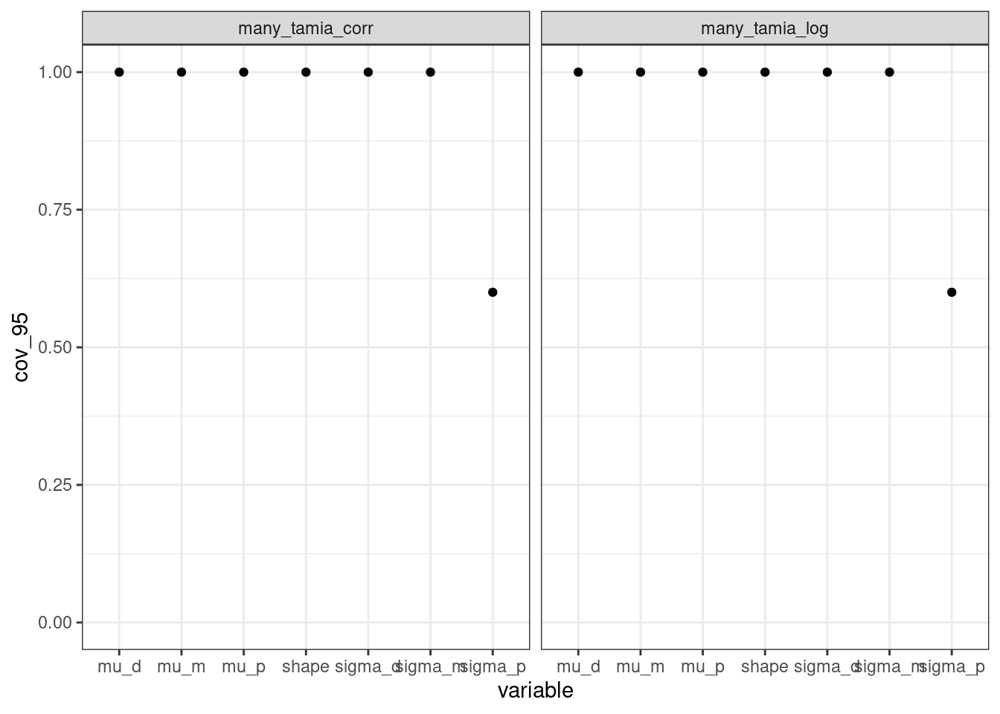
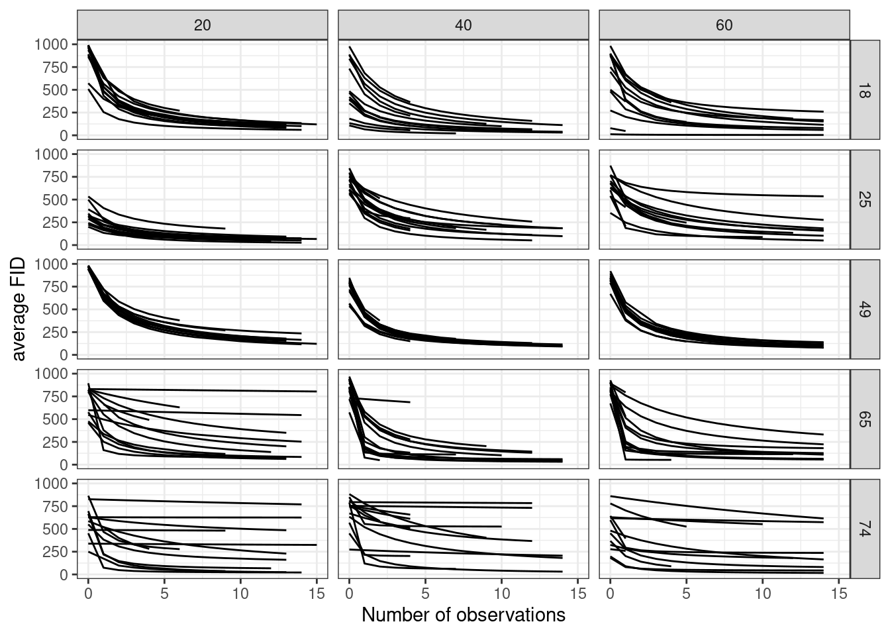
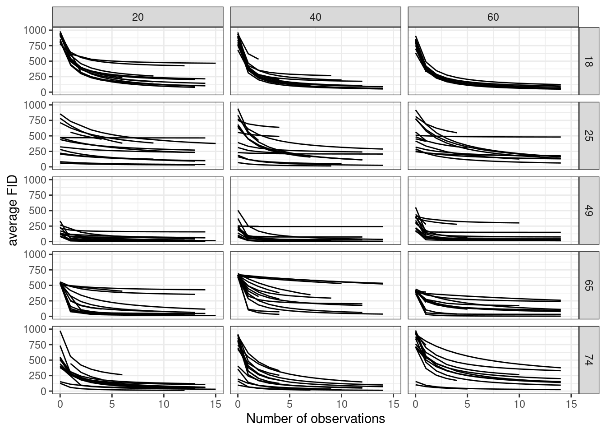
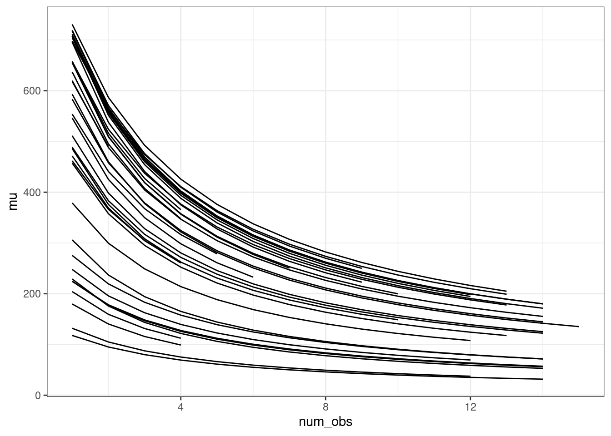
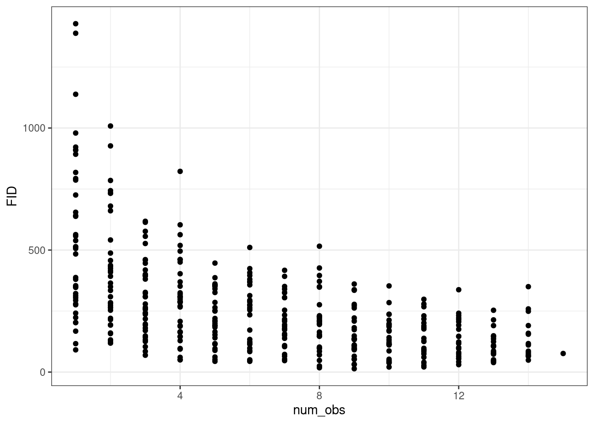

Simulations to measure the performance of a nonlinear model of habituation
Author
Andrew MacDonald
Introduction
It is important to validate our statistical models before using them to reach conclusions about ecological systems. In this paper we propose a nonlinear, hierarchical statistical model to capture how Flight Initiation Distance changes with increased exposure. In this Appendix we use simulations to validate this new model, following a produced suggested by DiRenzo, Hanks and Miller (2023). We use simulations to answer several distinct questions:
Which priors are appropriate? In hierarchical nonlinear models, it is difficult to select appropriate priors by inspection. Instead we use prior predictive checks: we select values from the prior and use these to create fake datasets.
Does the model recover parameters with large datasets? In models with many parameters, there is always the risk that parameters are difficult to estimate well. We fit a model with a large number of Tamia , each observed for many repeat observations, to validate that in this “idea” setting the model works well.
Does the model recover parameters in our dataset? Our field dataset contains unequal numbers of observations for each chipmunk, and field constraints mean that sample size in particular treatment combinations is limited. We simulate observations, while keeping every aspect of our dataset the same (treatments, number of observations per individual, etc). If a model can recover true parameters here, we can be more confident about applying it to our real observations.
Can unbalanced categories lead to spurious effect size estimates? Due to small sample effects, we do not have exactly equal representation in all of our treatment combinations. This is especially important in model 4, where we include sex and several aspects of individual personality in our model (see main text). Importantly, because of male chipmunk behaviour, males have fewer observations per individual than do females. We use simulations to confirm that effects of sex or personality on our results is not caused by the structure of the data.
What is our power to measure individual variation? One of the main purposes of our study is to measure individual variation in habituation. We compare our model with a method popular in the literature to detect these changes.
1. Which priors are appropriate?
Single-individual model: math notation
We begin by evaluating the simplest case: one individual Tamia, observed repeatedly and habituating to a constant stimulus. We model the habituation using the following assumptions:
Tamia begin with a high FID. This value is between 0 and 1000cm, because in our experiment this was the maximum distance at which an experimenter initiated the threat treatment.
FID declines with repeat exposures. It never goes below 0, and can only decline. While other models allow individuals to sensitize, we do not.
FID does not need to decline all the way to 0, but can stop between 0 and the starting value. * FID declines such that after a certain number of exposures, the individual’s FID is halfway between the starting value and the final value. The higher the number of exposures needed to get halfway to final FID, the slower the habituation.
The curve we finally ended up fitting resembles a classic TYPE II functional response curve, but inverted and scaled to correspond to our system.
This model is an adaptation of the classic Type II functional response, adapted to our study. It describes the FID of a chipmunk in three values:
\(M\), the initial flight initiation distance (proportion of 1000cm)
\(p\), the proportion of this initial FID which is lost through habituation
\(d\), the number of exposures to threat required for a chipmunk to move from \(M\) to its final FID after habituation.
This is an initial version of the model, which does not contain any effect of threat treatment or any effect of personality.
Here is the full bayesian model, including our expression for the average and all the priors.
one_tamia_simulation(0:25,logitM =3,logitp =5,logd = .8,shape =10)[c("num_obs", "FID")] |>as.data.frame() |>ggplot(aes(x = num_obs, y = FID)) +geom_point() +labs(x ="Number of observations") +theme_bw()
A simulation of 25 observations of one Tamia individual. Y-axis shows flight initiation distance in cm.
Different parameterizations
Note
This section is a short side note where I experiment with different ways of writing the model using Stan. It was an important first step before what comes next but it’s not interesting biologically and can be skipped over.
Our models need individual random effects on all parameters, and should also be flexible enough to include some individual level predictors. Both of these steps are made possible by placing a link function on all parameters. However, the creation of many nested functions can make a model both harder to read, and harder for the computer to estimate. This happens because when small numbers are multiplied together (or when large numbers are added) there is a risk that some precision will be lost in computer memory. Models with lots of nested functions can also be slower to fit.
I’ve chosen to experiment with writing this model on the log scale. This has a couple of advantages. First, by writing everything on the log scale, we avoid numerical problems when working with small values. Second, by rewriting the equation using algebra we can find ways to write the functions using Stan’s built-in composed functions which are stable and efficient.
in the model file one_tamia, we use the mathematical model as written:
data{ int n; vector[n] num_obs; vector[n] FID;}parameters{ real logitM; real logitp; real logd; real<lower=0> shape;}model{ vector[n] mu; real m =inv_logit(logitM); real p =inv_logit(logitp); real d =exp(logd); mu =1000* m * (1- p * num_obs ./ (d + num_obs)); FID ~gamma(shape, shape / mu); shape ~lognormal(2.3, .2); logitM ~normal(3, .5); logitp ~normal(5, .5); logd ~normal(.8, .2);}
in model one_tamia_log, I write the expression for the average on the log scale
These results show that all three models give very similar inference. For the rest of this project I’m using the log-scale calculation as in many_tamia_log, because I feel it has a good balance of efficiency and readability.
Single individual model: validation
The above was fit to a model where the observations vary but the parameters all have the same values. However, to be sure our model works well we should fit it to a prior simulation of the dataset. In a prior simulation, the values of all parameters are sampled from their prior distributions. Then, these values are used to simulate a dataset, the model is fit to it, and we see how often the true value falls within the 95% interval of the resulting posterior.
tar_load(prior_pred)prior_pred |>filter(variable %in%c("logitM", "logitp", "logd", "shape")) |>mutate(q2.5 =if_else( .name =="one_tamia_log_shape"& variable =="shape",exp(q2.5), q2.5),q97.5 =if_else( .name =="one_tamia_log_shape"& variable =="shape",exp(q97.5), q97.5) ) |>group_by(.name, variable) |>summarize(cov_95 =sum(.join_data > q2.5& .join_data < q97.5)/n()) |>ggplot(aes(x = variable, y = cov_95)) +geom_point() +facet_wrap(~.name) +coord_cartesian(ylim =c(0,1))#> `summarise()` has grouped output by '.name'. You can override using the#> `.groups` argument.
This shows that coverage is excellent for all parameters, with the exception of logd, which is recovered a little less than 80% of the time at the 95% credible interval.
Multiple individuals: math
To extend this model to multiple individuals we need to add hyperparameters to it
In this model, individual parameters are not correlated with each other. The variance covariance matrix is just the identity matrix, \(I\).
Sometimes we model correlations between parameters, and it is possible to extend the model in this way also:
I was recently talking to Michael Betancourt, who argued pursuasively that adding these correlations into a model is not always justified or useful! Coding them is a considerable effort and doesn’t add much in our use case. We might consider dropping them.
Simulating data from a prior is essential for defining priors that reflect knowledge about a system. Here we have chosen very general priors that cover a wide range of FID responses to threat treatment. This includes many which are biologically implausible, indicating that our prior is not too restrictive. However it excludes many cases that do not match our knowledge of the system: for example, FIDs which increase with exposure, or extremely rapid or slow habituation.
tar_load(prior_pred_data)prior_pred_data |>map_depth(2, ~.x[c("num_obs", "FID")]) |>flatten() |>map_df(as_tibble, .id ="rep") |> ggplot2::ggplot(ggplot2::aes(x = num_obs, y = FID)) + ggplot2::geom_point() + ggplot2::facet_wrap(~rep) +labs(x ="Number of observations", y ="FID") +theme_bw()
Figure 1: Simulations from the prior predictive distribution for our model of FID (Flight initiation distance). Each panel is a simulated chipmunk.
\(p\) can be understood as the strength of habituation. The higher (more positive), the more of the original FID is lost over time.
We can understand hyperparameters (i.e. \(\sigma_M, \sigma_p, \sigma_d\) and \(R\)) by simulating and asking if they represent a plausible range of between-tamia variation. Again, we try to cover a range of plausible values while allowing for extreme cases.
Multiple individuals: validation
I performed the same coverage tests as before, but this time on the hierarchical model for multiple individuals. This demonstrates that we can accurately recover parameters for this model.
tar_load(cov_hier)cov_hier |>filter(variable %in%c("mu_m", "mu_p", "mu_d", "shape", "sigma_m", "sigma_d", "sigma_p")) |>group_by(.name, variable) |>summarize(cov_95 =sum(.join_data > q2.5& .join_data < q97.5)/n()) |>ggplot(aes(x = variable, y = cov_95)) +geom_point() +facet_wrap(~.name) +coord_cartesian(ylim =c(0,1))#> `summarise()` has grouped output by '.name'. You can override using the#> `.groups` argument.

Proportion of coverage for all parameters (left) and for all the population-level parameters (right). That is, the right-hand figure shows only the main effects, shape parameter, and hyperparameters; it excludes the individual values of M, p and d for each individual.
Risk: math & Stan
Warning
under construction I haven’t written the math notation for these models yet!
One of the advantages of a nonlinear model for FID is that we can explicitly model how all three parameters should vary in response to treatment. There are many ways to do this. Most straightforward is to allow each risk treatment to have a separate value of \(M\), \(p\) and \(d\). (AKA a “fixed effect” model):
data{// sample posterior (1) or prior prediction only (0)? int<lower=0, upper=1> sample_post; int n; int n_tamia; vector[n] num_obs; vector[n] FID; array[n] int<lower=1,upper=n_tamia> tamia_id;// which risk treatment is each tamia in array[n_tamia] int<lower=1,upper=3> risk_id;}transformed data{// log num_obs for convenience later vector[n] ln_nobs =log(num_obs);}parameters{// random effects for personality vector[n_tamia] Z_m; real mu_m; real<lower=0> sigma_m; vector[n_tamia] Z_p; real mu_p; real<lower=0> sigma_p; vector[n_tamia] Z_d; real mu_d; real<lower=0> sigma_d;// the effects of risk on the AVERAGE of each parameter// each element of the array corresponds to 3 risk treatments array[3] vector[3] risk_avg;// Shape parameter real<lower=0> shape;}transformed parameters { vector[n_tamia] logitM = Z_m * sigma_m + risk_avg[1][risk_id]; vector[n_tamia] logitp = Z_p * sigma_p + risk_avg[2][risk_id]; vector[n_tamia] logd = Z_d * sigma_d + risk_avg[3][risk_id];}model{// mean vector[n] logmu; logmu =-6.9-log_inv_logit(logitM[tamia_id])-log1m_exp( log_inv_logit(logitp[tamia_id])+ ln_nobs- logd[tamia_id]-log1p_exp(ln_nobs - logd[tamia_id]) );// likelihoodif (sample_post ==1){ FID ~gamma(shape, shape *exp (logmu)); }// priors Z_m ~std_normal(); Z_p ~std_normal(); Z_d ~std_normal();// priors on constant terms = priors on averages risk_avg[1] ~normal(1, 1); risk_avg[2] ~normal(3, .5); risk_avg[3] ~normal(.5, .5);// hierarchical variances parameters sigma_m ~exponential(1); sigma_p ~exponential(1); sigma_d ~exponential(1); shape ~lognormal(2.3, .2);}generated quantities { vector[n] mu; vector[n] log_lik; vector[n] yrep; mu =exp(-6.9-log_inv_logit(logitM[tamia_id])-log1m_exp(log_inv_logit(logitp[tamia_id])+ ln_nobs- (logd[tamia_id])-log1p_exp(ln_nobs - logd[tamia_id])));for (j in1:n) { log_lik[j] =gamma_lpdf(FID[j] | shape, shape * mu[j]); yrep[j] =gamma_rng(shape, shape * mu[j]); }}
tar_load(design_data)tar_load(prior_draws_risk_many_tamia_log)plot_prior_from_stan(prior_draws_risk_many_tamia_log, design_data)#> Joining with `by = join_by(rowname)`

Five simulations from the prior predictive distribution of a model of risk. This model allows the average of each parameter to vary by treatment and uses ordinal contrasts.
Another possibility is to model the effect of this factor using contrasts. Ordinal contrasts are particularly interesting, because they seem to correspond to specific hypotheses about how the perceived amount of risk should affect habituation:
data{// sample posterior (1) or prior prediction only (0)? int<lower=0, upper=1> sample_post; int n; int n_tamia; vector[n] num_obs; vector[n] FID; array[n] int<lower=1,upper=n_tamia> tamia_id;// which risk treatment is each tamia in array[n_tamia] int<lower=1,upper=3> risk_id;}transformed data{// log num_obs for convenience later vector[n] ln_nobs =log(num_obs);// define ordinal contrast matrix matrix[3, 3] contr = [ [1, -0.707106781186548, 0.408248290463863], [1, -7.85046229341888e-17, -0.816496580927726], [1, 0.707106781186547, 0.408248290463863] ];}parameters{// random effects for personality vector[n_tamia] Z_m; real mu_m; real<lower=0> sigma_m; vector[n_tamia] Z_p; real mu_p; real<lower=0> sigma_p; vector[n_tamia] Z_d; real mu_d; real<lower=0> sigma_d;// the effects of risk on the AVERAGE of each parameter// each element of the array corresponds to 3 risk treatments array[3] vector[3] b_risk;// Shape parameter real<lower=0> shape;}transformed parameters { array[3] vector[3] risk_avg;for (k in1:3){// contrast matrix -- matrix multiplication risk_avg[k] = contr * b_risk[k]; } vector[n_tamia] logitM = Z_m * sigma_m + risk_avg[1][risk_id]; vector[n_tamia] logitp = Z_p * sigma_p + risk_avg[2][risk_id]; vector[n_tamia] logd = Z_d * sigma_d + risk_avg[3][risk_id];}model{// mean vector[n] logmu; logmu =-6.9-log_inv_logit(logitM[tamia_id])-log1m_exp( log_inv_logit(logitp[tamia_id])+ ln_nobs- logd[tamia_id]-log1p_exp(ln_nobs - logd[tamia_id]) );// likelihoodif (sample_post ==1){ FID ~gamma(shape, shape *exp (logmu)); }// priors Z_m ~std_normal(); Z_p ~std_normal(); Z_d ~std_normal();// priors on constant terms = priors on averages b_risk[1][1] ~normal(1, 1); b_risk[2][1] ~normal(3, .5); b_risk[3][1] ~normal(.5, .5);// nonlinear effects : tight priors to give some skepticism b_risk[1][2:3] ~normal(0, .5); b_risk[2][2:3] ~normal(0, .5); b_risk[3][2:3] ~normal(0, .5);// hierarchical variances parameters sigma_m ~exponential(1); sigma_p ~exponential(1); sigma_d ~exponential(1); shape ~lognormal(2.3, .2);}generated quantities { vector[n] mu; vector[n] log_lik; vector[n] yrep; mu =exp(-6.9-log_inv_logit(logitM[tamia_id])-log1m_exp(log_inv_logit(logitp[tamia_id])+ ln_nobs- (logd[tamia_id])-log1p_exp(ln_nobs - logd[tamia_id])));for (j in1:n) { log_lik[j] =gamma_lpdf(FID[j] | shape, shape * mu[j]); yrep[j] =gamma_rng(shape, shape * mu[j]); }}
tar_load(design_data)tar_load(prior_draws_risk_ordinal_many_tamia_log)plot_prior_from_stan(prior_draws_risk_ordinal_many_tamia_log, design_data)#> Joining with `by = join_by(rowname)`

Five simulations from the prior predictive distribution of a model of risk. This model allows the average of each parameter to vary by treatment and uses ordinal contrasts.
Design data
So far, the simulations have used an idealized dataset where all individuals are observed a large number of times. In the following section I assess the model’s performance on a data simulation based on the real dataset. In reality, different individuals are not observed the same number of times. Observations, in this dataset, have a double impact on the model: they are simultaneously the independent variable and also represent greater power. Therefore its important to find out if a realistic distribution of observations per individual actually results in less power or worse performace.
tar_load(design_sim)design_simulation <- design_sim[c("num_obs", "tamia_id", "FID", "mu")] |>as.data.frame()design_simulation |>ggplot(aes(x = num_obs, y = mu, group = tamia_id)) +geom_line()design_simulation |>ggplot(aes(x = num_obs, y = FID, group = tamia_id)) +geom_point()

Simulations from the prior distribution based on the true dataset.

Simulations from the prior distribution based on the true dataset.
Fit to many of these and look at posterior coverage
under construction
I performed simulations using brms and showed that the design of Catherine’s experiment allows parameters to be recovered very well. I have yet to redo this with the Stan models. It might change a bit as a result.
Model 4: many predictors
Warning
I’m not sure to what extent this is still required or interesting! The models directly above (i.e. using Risk as a factor) are already a good step towards this.
In model 4, we attempt to explain individual differences in the parameters \(M\), \(p\) and \(d\) by adding individual-level predictor variables to our model. These are sex, number of previous captures, Docility, and Explorativeness. However, such effects might be difficult to detect in our experiment, as this represents more parameters to estimate. This is especially important for sex: male chipmunks are less likely to remain in the study area, and therefore are less likely to be observed frequently. This results in less opportunity to observe their habituation. It might also result in a biased estimate of differences between the sexes.
To investigate the possibility of spurious effects of individual-level predictors, we simulated data using Model 1 above. This model does not have any effects of the four predictors above. We then fit a model which contains all the predictor variables.
The simulation produces chipmunk which vary individually, and which have the same number of observations per individual as the real dataset. We then analyzed this model with Model 4. Since there are no effects of individual-level predictors present in the model (other than Risk), We should find the posterior distributions to be close to 0 for \(\beta_c\), \(\beta_x\), \(\beta_d\) and \(\beta_{sex}\)
In general, the model finds posteriors that are close to 0 for all coefficients. However, there is a surprising bias towards spurious sex-differences in the value of \(p\). This is possibly due to the lower sample size of male chipmunks
Transformations
A common way to work with this kind of data is to transform it, and then to use a mixed-model approach. We want to test the power of these models to discover individual variation, and compare it to our proposed model for FID.
Which model is better at detecting individual variation in habituation? Here I’m defining habituation in a specific way – that while individuals might start at different FID, their response to successive exposures to a stimulus is different. That is, there is individual variation in the “slope”. I consider that a model shows evidence for individual variation in habituation when an information criterion (LOO-IC in this case) prefers a model with individual slopes over one where all models have the same slope.
In math, the code for a transformed model looks like this. the function \(g()\) could be anything; in our test we use \(g(x) = \sqrt{x}\) and \(g(x) = \ln(x)\)
On the left is the average FID, on the right is observations around this average (note the slightly different scale). note that this variation is much lower than the variation we found in our dataset. There is also individual variation here, a bit greater than what was found in the real dataset.
I simulated many datasets that looked like this one. For each, I fit a pair of models. One model has individual differences in habituation (i.e. close to the truth); the other model has constant habituation for all individuals. For each dataset, I compared both models using LOO-IC (basically a bayesian AIC). The following figure shows the model comparison output. More negative numbers mean the model WITH variation is winning (the numbers measure how much lower the LOO-IC score is for the constant-habituation model)
These results show the increased power of our approach in comparison to two others: log transformed FID and square-root transformed FID. I think it is interesting that it seems a square-root model isn’t able to detect individual difference, even at small sample size.
Its not that surprising that the nonlinear model fits well, since that is the data-generating model. What’s interesting to me is that the square root, and even the log - transformed model have quite weak results.
References
DiRenzo, Graziella V., Ephraim Hanks, and David A. W. Miller. 2023. “A Practical Guide to Understanding and Validating Complex Models Using Data Simulations.”Methods in Ecology and Evolution 14 (1): 203–17. https://doi.org/10.1111/2041-210X.14030.